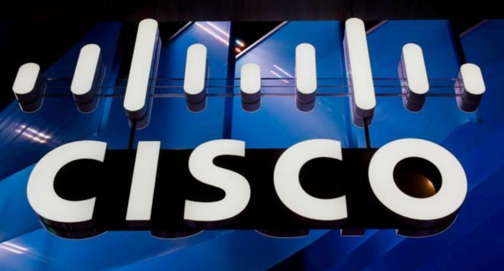

The Times of India
September25,2025
Thursday
U.S. sounds alarm over hackers targeting Cisco security devices
The affected equipment included a subset of Cisco Adaptive Security Appliance (ASA) 5500-x Series devices, which work as firewalls protecting corporate netwoeks from hackers.
The U.S.government's cyber defence agency has issued urgent guidance to other federal agencies over hackers exploiting a previously unknown vulnerability in Cisco security devices.
In an emergency directive issued Thursday, the Cybersecurity and Infrastructure Security Agency said government cyber workers had just over one day to account for all such devices plugged into their networks, scan them for malicious activity, and apply relevant software updates intended to patch the vulnerability.
This widespread campaign poses asignificant risk to victims' networks, "CISA said in a statement
The affected equipment included a subset of Cisco Adaptive Security Appliance (ASA) 5500-X Series devices, which work as firewalls protecting corporate networks from hackers.
Although network edge devices like firewalls are meant to provide additional security, their exposure to the wider internet and the frequent failure to keep their software curent can make them tempting targets. Verizon's annual report on digital breaches, published in May, said the exploitation of edge devices had surged in 2024.
In a blog post also published Thursday, Cisco said the malicious activity aimed at its equipment was complex and sophisticated. It tied the hackers involved to a previously discovered cyberespionage nicknamed ArcaneDoor, which researchers at internet intelligence firm Censys have in turn tied to China. Beijing routinely denies being behind such hacking campaigns.
Cisco said it urged customers to follow its provided guidance to determine "exposure and courses of action."
Name: Shiv Kumar
Admission Number: 2025B01010693